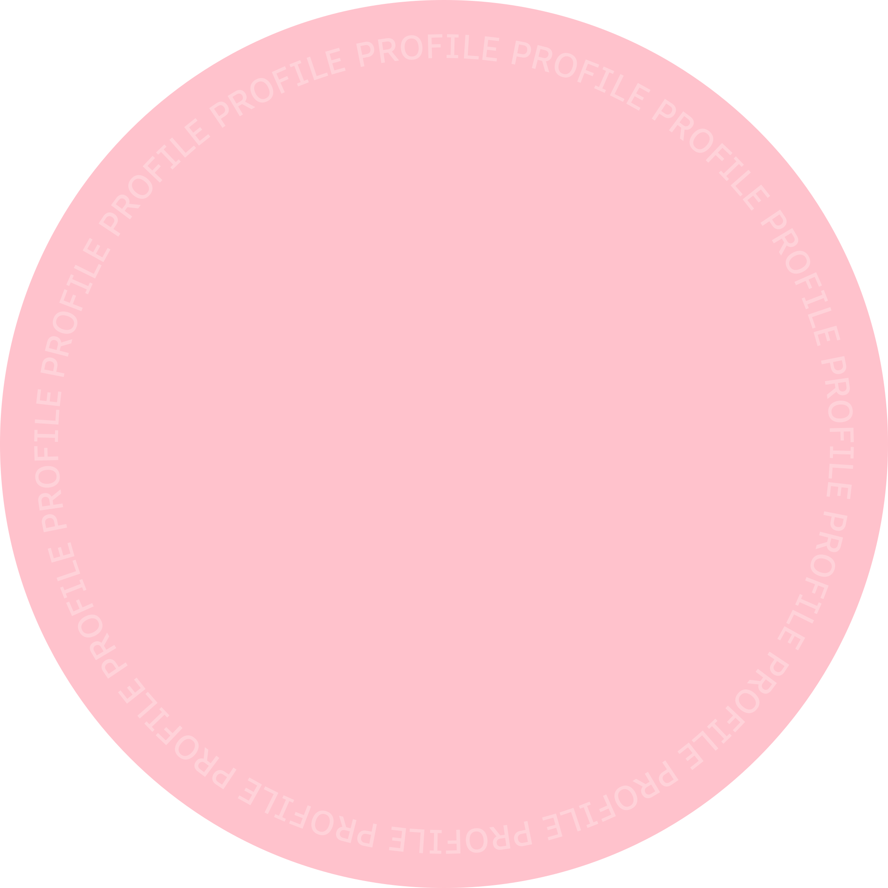
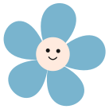
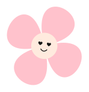

公立大学デザイン学科卒業。パッケージデザインなどの身の回りのデザインに魅了され、デザインを学ぶ道へ。
現在は、営業・企画職として働きながら、自社アプリのキャンペーンチラシの制作・分析・改善に携わっています。情報を整理してわかりやすく伝え、結果に結びつけるための試行錯誤を繰り返す中で、伝わるデザインを制作することの楽しさを実感し、Webデザインを学び始めました。
デザインの目的を捉え、結果と丁寧さを大切にするデザイナーを目指しています。
Illustrator/Photoshop/Figma
HTML/CSS/JavaScript
提案資料作成/Excelを用いたデータ管理・集計/顧客対応
提案資料作成
Excelを用いたデータ管理・集計
顧客対応
ファッションの配色やコーディネートを考えることが好きです。
それから、惹かれたパッケージやバナーデザインはつい写真を撮ってしまいます。日常の中にあるデザインを観察することが、自分の感性を育てる時間になっています。

デザインは、一方的に伝えるのではなく、“伝わる”ことが大切だと考えています。
3つの“伝わる”を大切に、真心込めてデザインを制作します。
デザインは、
一方的に伝えるのではなく、
“伝わる”ことが大切だと考えています。
3つの“伝わる”を大切に、
真心込めてデザインを制作します。
デザインには何かしらの目的があります。なぜこのデザインなのか、なんとなくではなく、意味のあるデザインを作ります。

見た人の感性に訴えかけることができるのもデザインの力です。可愛い、カッコいい、美しいといった感覚的な魅力も伝わるデザインを作ります。

デザインを通して、どんなことを達成したいのか、想いを汲み取り、丁寧にかたちにします。